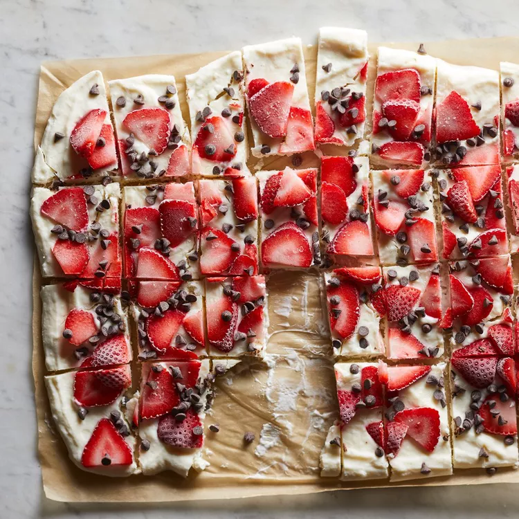

Frozen Yogurt Bars

Description
These lower calories, higher protien yogurt bars come together quickly and serve as a better choice for a delicious dessert.
Ingredients
- Full Fat Greek Yogurt
- Honey
- Vanilla Extract
- Strawberries
- Chocolate Chips
Steps
- Combine yogurt, honey, and vanilla in a bowl. Mix well.
- Spread yogurt mixture out evenly on a baking sheet lined with parchment paper.
- Top with sliced strawberries and chocolate chips.
- Freeze for at least 3 hours. Cut and serve.